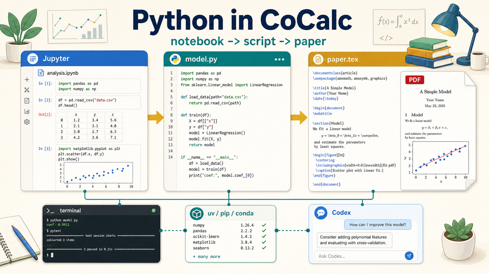
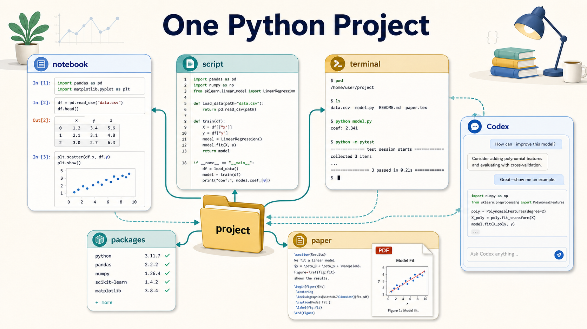
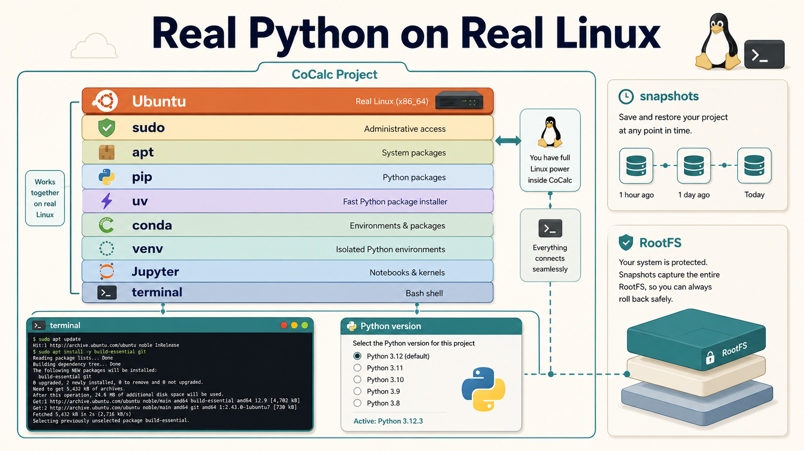

A CoCalc-AI field guide for Python work
Python in CoCalc
Start in a notebook, move stable ideas into scripts, run the real environment from a terminal, and bring the result into a paper or report without leaving the project.

Python in CoCalc is not a single product surface. It is a language
that can move through several surfaces in one shared project:
notebooks, .py files, terminals, package environments,
LaTeX, markdown, chat, course assignments, and agent workflows.
That is the important difference. A notebook is great for exploration, a script is better for reusable code, a terminal is often the right place to install and run things, and a paper or report is where the result becomes communication. CoCalc keeps those stages together.
Think project first, not notebook first
Many Python tools start with a single interface: a notebook, an IDE, a terminal, or a hosted runtime. CoCalc starts with the project. The project contains the files, runtime, collaborators, chat, history, snapshots, backups, and agents.
That makes it natural to change modes. A notebook can produce a prototype. A script can turn that prototype into something testable. A terminal can install packages and run jobs. A LaTeX document can use the figures and tables that the code produced.

One useful Python workflow
Start with analysis.ipynb. Load data, plot quickly,
test assumptions, and keep the exploratory record.
Move stable code into model.py, a small package, or
tests so the work can be rerun and reviewed.
Use a terminal for uv, pip,
conda, Git, long-running jobs, and direct checks.
Put figures, tables, and explanations into LaTeX, markdown, slides, or a course assignment.
It is real Python on real Linux
CoCalc-AI projects are full Linux environments. You can use
sudo, install Ubuntu packages with apt,
create virtual environments, use uv, pip,
or conda, and install native libraries when Python
packages need them.
This matters because serious Python work often depends on more than Python. Compilers, system libraries, command-line tools, TeX, databases, data files, and service processes can all be part of the same project environment.

Codex is strongest at the boundaries
Python problems often cross file and tool boundaries: an import error caused by a missing system library, a notebook state mismatch, a failing test, a figure saved to the wrong path, or a dependency that belongs in the project setup notes.
Codex can inspect the files, terminal output, package state, and notebook context together. That makes it useful for practical jobs: create a virtual environment, diagnose a package install failure, move notebook code into a module, write tests, or update a paper to use the latest generated figure.
Good prompts
"Move the reusable code from this notebook into a Python module and update the notebook to import it." "Figure out why this package import fails." "Create a small test for this script." "Make the paper use the figure this script generated."
Teaching Python is mostly environment management
In a class, the hard part is rarely explaining for
loops. The hard part is getting every student into the same working
environment with the right packages, data, notebooks, scripts, and
grading tools.
CoCalc courses can give each student a project, assign and collect work automatically, use nbgrader for notebooks, and rely on TimeTravel, snapshots, and reusable RootFS images when students need help or recovery.
What this changes
- Students work in the same Python stack.
- Instructors can inspect the actual project state.
- Assignments can include notebooks, scripts, data, and tests.
- RootFS images make the course environment reusable.
The paper can stay connected to the computation
A common research pattern is to explore in a notebook, clean up the code, generate figures or tables, then write the result. CoCalc is built for that kind of mixed work because the paper, scripts, notebooks, data, and terminal commands all live in one place.
You can use normal Python-driven document workflows, including PythonTeX-style or PyTeX-style projects when they are installed and configured in the project. More importantly, the code that produced the result remains nearby and inspectable.
A good end state
The notebook explains the exploration, model.py
reproduces the result, the terminal documents the environment, and
paper.tex includes the figure that the script produced.
Python is a project language in CoCalc
Use notebooks when they help, scripts when they help, terminals when they help, and papers when the result needs to be communicated. CoCalc is the place where those modes stay connected.
See the Python feature page